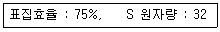
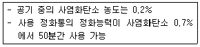
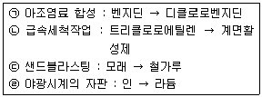
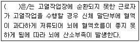
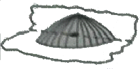
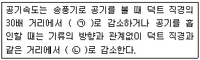
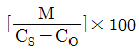
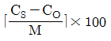
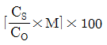
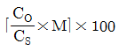

산업위생관리산업기사 (2013-06-02 기출문제)
1과목: 산업위생학 개론
1. 미국 산업안전보건연구원(NIOSH)에 의한 증량물 취급작업의 감시기준이 30kg이라면 최대허용기준(MPL)은 몇 kg인가?
- 45
- 60
- 75
- 90
(정답률: 88%)

2. 다음 중 산소결핍에 대하여 가장 민감한 조직은?
- 폐
- 말초신경계
- 대뇌피질
- 뇌간척수계
(정답률: 88%)
3. 다음 중 영양소 부족에 의한 결핍증의 연결이 잘못된 것은?
- 비타민 B1 - 구루병
- 비타민 A - 야맹증
- 단백질 - 전신부종, 피부반점
- 비타민 K - 혈액응고 지연작용
(정답률: 73%)
4. 기초대사량이 75kcal/hr이고, 작업대사량이 225kcal/hr인 작업을 계속 수행할 때, 작업 한계시간은 약 얼마인가? (단, log계속작업한계시간 = 3.724-3.25xlogRMR을 적용한다.)
- 1.5시간
- 2시간
- 2.5시간
- 3시간
(정답률: 46%)
5. 산업안전보건법에 의한 ‘화학물질의 분류ㆍ표시 및 물질 안전보건자료에 관한 기준’에서 정하는 경고표지의 색상으로 적합한 것은?
- 경고표지 전체의 바탕은 흰색으로, 글씨와 테투리는 검정색으로 하여야 한다.
- 경고표지 전체의 바탕은 흰색으로, 글씨와 테두리는 붉은색으로 하여야 한다.
- 경고표지 전체의 바탕은 노란색으로, 글씨와 테두리는 검정색으로 하여야 한다.
- 경고표지 전체의 바탕은 노란색으로, 글씨와 테두리는 붉은색으로 하여야 한다.
(정답률: 56%)
6. 온도 25℃, 1기압하에서 분당 200mL씩 100분 동안 채취한 공기 중 톨루엔(분자량92)이 5mg 검출되었다. 톨루엔은 부피단위로 몇 ppm인가?
- 27
- 66
- 272
- 666
(정답률: 53%)
7. 다음 중 1940년대 일본에서 발생한 질병으로 “이타이이타이병”이라고도 하며, 만성중독시 신장기능장애, 뼈 조직의 장애 등을 일으키는 원인물질은?
- 납
- 망간
- 수은
- 카드뮴
(정답률: 85%)
8. 미국산업위생학술원(american academy of industrial hygiene)은 산업위생분야에 종사하는 사람들이 반드시 지켜야 할 윤리 강령을 채택하였다. 다음 설명 중 틀린 것은?
- 근로자, 사회 및 전문직종의 이익을 위해 과학적 지식을 공개하고 발표한다.
- 전문적 판단이 타협에 좌우될 수 있거나 이해관계가 있는 상황에는 개입하지 않는다.
- 위험요인의 측정, 평가 및 관리에 있어서 외부의 압력에 굴하지 않고 소신껏 주관적 태도를 취한다.
- 기업체의 기밀은 누설하지 않는다.
(정답률: 80%)
9. 다음 중 산업위생의 중요성이 급속하게 대두된 원인과 거리가 가장 먼 것은?
- 산업현장에서 취업하는 근로자수의 급격한 증가
- 근로자의 권익을 보호하고자 하는 시대적인 사회사조 대두
- 노동생산성 향상을 위하여 인력관리측면에서 근로자 보호가 필요
- 대기오염에 의한 질병으로 비용부담의 급속한 증가
(정답률: 77%)
10. 산업안전보건법령상 보건에 관한 기술적인 사항에 관하여 사업주를 보좌하고 관리감독자에게 지도ㆍ조언을 할 수 있는 자는 누구인가?
- 보건관리자
- 관리책임자
- 관리감독책임자
- 명예산업안전보건감독관
(정답률: 87%)
11. 다음 중 산업스트레스의 반응에 따른 행동적 결과와 가장 거리가 먼 것은?
- 흡연
- 불면증
- 행동의 격양
- 알코올 및 약물 남용
(정답률: 73%)
12. 다음 중 전신피로에 있어 생리학적 원인에 해당되지 않는 것은?
- 산소공급 부족
- 혈중 포도당 농도의 저하
- 근육 내 글리코겐량의 감소
- 소변 중 크레아틴량의 감소
(정답률: 55%)
13. 근골격계질환을 예방하기 위한 작업환경개선의 방법으로 인체측정치를 이용한 작업환경의 설계가 이루어질 때 다음 중 가장 먼저 고려되어야 할 사항은?
- 조절가능 여부
- 최대치의 적용 여부
- 최소치의 적용 여부
- 평균치의 적용 여부
(정답률: 79%)
14. 다음 중 ACGIH의 발암성 분류 및 유해물질을 올바르게 나열한 것은?
- A3 : Beryllium, Pb
- A2 : Arsenic(As), Cr+6
- A1 : Benzene, Asbestos
- A4 : Cadmium, Carbon black
(정답률: 70%)
15. 다음 중 산업재해의 발생빈도를 나타내는 지표는?
- 강도율
- 연천인율
- 유병율
- 도수율
(정답률: 77%)
16. 다음 중 소음성 난청에 영향을 미치는 요소에 대한 설명으로 틀린 것은?
- 음압수준이 높을수록 유해하다.
- 고주파음이 저주파음보다 더욱 유해하다.
- 간헐적인 소음노출이 계속적 소음노출보다 더 유해하다.
- 소음에 노출된 모든 사람들이 똑같이 반응하지는 않으며, 감수성이 매우 높은 사람이 극소수 존재한다.
(정답률: 63%)
17. 다음 중 작업대사율(RMR)에 관한 공식으로 틀린 것은?
- 작업대사량/기초대사량
- 작업대사라야-기초대사량/기초대사량
- 작업 시 소모열량 - 안정 시 열량/기초대사량
- 작업시 산소소비량 - 안정 시 산소소비량/기초대사 시 산소소비량
(정답률: 64%)
18. 다음 중 상용근로자 건강진단의 목적과 가장 거리가 먼 것은?
- 근로자가 가진 질병의 조기발견
- 질병이환 근로자의 질병치료 및 취업제한
- 근로자가 일부에 부적합한 인적 특성을 지니고 잇는지의 여부 확인
- 일이 근로자 자신과 직장동료의 건강에 불리한 영향을 미치고 있는지의 여부 발견
(정답률: 67%)
19. 사업장에서 건강 영향이나 직업병 발생에 관여하는 것으로 작업요인이 큰 연관성을 갖고 있다. 다음 중 이러한 작업요인에 관한 설명으로 가장 적합하지 않는 것은?
- 작업시간은 하루 8시간, 1주 48시간을 원칙으로 가급적 준수한다.
- 작업요인으로는 적성배치 외에도 작업시간이나 교대제 등의 작업조건도 배려할 필요가 있다.
- 교대제 근무에 대한 일주기 리듬의 생리적, 심리적 적응은 불완전하므로 생산적 이유 이외의 교대제는 하지 않는다.
- 적성배치란 근로자의 생리적, 심리적 특성에 적합한 작업에 배치하는 것을 말한다.
(정답률: 56%)
20. 작업환경측정 및 지정측정기관평가 등에 의한 고시에 의하여 공기 중 석면을 위상차현미경으로 분석할 경우 그 글이가 얼마 이상인 것을 계수하는가?
- 1um
- 5um
- 10um
- 15um
(정답률: 40%)
2과목: 작업환경측정 및 평가
21. 허용기준 대상 유해인자의 노출농도 측정 및 분석방법 중 온도표시에 관한 내용으로 틀린 것은?
- 냉수는 15℃ 이하를 말한다.
- 온수는 50~60℃를 말한다.
- 찬 곳은 따로 규정이 엇는 한 0~15℃의 곳을 말한다.
- 민온은 30~40℃이다.
(정답률: 75%)
22. 100ppm을 %로 환산하면 몇 %인가?
- 1.0
- 0.1
- 0.01
- 0.001
(정답률: 71%)
23. 2차 표준기구와 가장 거리가 먼 것은?
- 오리피스미터
- 습식 테스트미터
- 폐활량계
- 열선기류계
(정답률: 80%)
24. 가스상 물질을 순간시료채취방법으로 사용할 수 없는 경우는?
- 오염물질농도가 시간에 따라 변화되지 않을 때
- 시간가중평균치를 구하고자 할 때
- 공기 중 오염물질의 농도가 높을 때
- 검출기의 검출한계보다 공기 중 농도가 높을 때
(정답률: 57%)
25. 입지상 물질의 채취방법 중 직경분립충돌기의 장점과 가장 거리가 먼 것은?
- 호흡기의 부분별로 침착된 입자크기의 자료를 추정할 수 있다.
- 크기별 동시측정이 가능하여 소요비용이 절감된다.
- 입자의 질량크기 분포를 얻을 수 있다.
- 흡입성, 흉곽성, 호흡성 입자의 크기별로 분포와 농도를 계산할 수 있다.
(정답률: 56%)
26. 직경이 7.5cm인 흑구온도계의 측정시간으로 적절한 기준은? (단, 고용노동부 고시 기준)
- 5분 이상
- 15분 이상
- 20분 이상
- 25분 이상
(정답률: 60%)
27. 소음측정에 관한 설명으로 틀린 것은? (단, 고용노동부 고시 기준)
- 소음수준을 측정할 때에는 측정대상이 되는 근로자의 근접된 위치의 귀높이에서 측정하여야 한다.
- 단위작업장소에서의 소음발생시간이 6시간 이내인 경우에는 발생시간을 등간격으로 나누어 2회 이상 측정하여야 한다.
- 누적소음노출량 측정기로 소음을 측정하는 경우에는 criteria=90dB, exchangerate=5dB, threshold=80dB로 기기설정을 하여야 한다.
- 소음이 1초 이상의 간격을 유지하면서 최대음압수준이 120dB(A)이상의 소음인 경우에는 소음수준에 따른 1분 동안의 발생횟수를 측정하여야 한다.
(정답률: 67%)
28. 활성탄으로 시료채취 시 가장 많이 사용되는 탈착용매는?
- 에탄올
- 이황화탄소
- 헥산
- 클로로포름
(정답률: 79%)
29. 검지관에 관한 설명으로 틀린 것은?
- 특이도가 높다.
- 비교적 고농도에만 적용이 가능하다.
- 다른 방해물질의 영향을 받기 쉬다.
- 한 검지관으로 단일물질만을 측정할 수 있어 각 오염물질에 맞는 검지관을 정해야 한다.
(정답률: 80%)
30. 다음 출력이 0.4W의 작은 점은원으로부터 500m 떨어진 곳의 SPL(음압레벨)은? (단, SPL=PWL-20logr-11)
- 41dB
- 51dB
- 61dB
- 71dB
(정답률: 56%)
31. 흡스성이 적고 가벼워 먼지무게 분석, 유리규산 채취, 6가 크롬 채취에 적용되는 여과지는?
- 유리섬유 여과지
- 셀룰로오스에스테르(MCE)막 여과지
- PVC막 여과지
- 은막 여과지
(정답률: 65%)
32. 25℃, 1atm에서 H2S를 함유한 공기 500L를 흡수액 20mL에 통과시켰더니 액 증의 H2S양은 20mg이었다. 공기 중 H2S의 농도(ppm)는?

- 19.5
- 24.6
- 26.7
- 38.4
(정답률: 31%)
33. 입경이 14㎛이고, 밀도가 1.5g/cm3인 입자의 침강속도는?
- 0.55cm/sec
- 0.68cm/sec
- 0.72cm/sec
- 0.88cm/sec
(정답률: 67%)
34. 한 작업장의 분진농도를 측정한 결과 2.3, 2.2, 2.5, 5.2, 3.3mg/m3이었다. 이 작업장 분진농도의 기하평균값은?
- 약 3.43mg/m3
- 약 3.34mg/m3
- 약 3.13mg/m3
- 약 2.93mg/m3
(정답률: 67%)
35. 1,000Hz 순음의 음세기레벨 40dB의 음크기는?
- 1SPL
- 1sone
- 1phon
- 1PWL
(정답률: 63%)
36. 다음 내용은 무슨 법칙에 해당되는가?
- 라울트의 법칙
- 샤를의 법칙
- 게이-뤼삭의 법칙
- 보일의 법칙
(정답률: 65%)
37. 소음수준 측정 시 소음계의 청감보정회로는 어떻게 조정하여야 하는가? (단, 고용노동부 고시 기준)
- A 특성
- C 특성
- 빠름
- 느림
(정답률: 85%)
38. 주물공장 내에서 비산되는 먼지를 측정하기 위해서 High volume air sampler를 사용하였다. 분당 3L로 60분간 포집하여 여과지를 건조시킨 후, 측량한 결과 2.46mg이었다. 주물 공장 내 먼지 농도는? (단, 포집 전 여과지의 무게는 1.66mg, 공실험은 고려하지 않는다.)
- 2.44mg/m3
- 3.54mg/m3
- 4.44mg/m3
- 5.54mg/m3
(정답률: 57%)
39. 특정 상황에서는 측정기구 없이 수학적인 모델링 또는 공식을 이용하여 공기 중 해당 물질의 농도를 추정할 수 있다. 온도가 25℃(1기압)인 밀폐된 공간에서 수은증기가 포화상태에 도달했을 떄의 공기 중 수은의 농도는? (단, 수은(원자량 201)의 증기압은 25℃, 1기압에서 0.002mmHg이다.)
- 26.3ppm
- 26.3mg/m3
- 21.6ppm
- 21.6mg/m3
(정답률: 28%)
40. 공기 중 석면의 농도 표시는?
- 개/cc
- ppm
- mg/m3
- 길이/L
(정답률: 83%)
3과목: 작업환경관리
41. B공장 집진기용 송풍기의 소음을 측정한 결과, 가동 시는 90dB(A)이었으나, 가동 중지 상태에서는 85dB(A)이었다. 이 송풍기의 실제 소음도는?
- 86.2dB(A)
- 87.1dB(A)
- 88.3dB(A)
- 89.4dB(A)
(정답률: 50%)
42. 방진재의 금속스프링에 관한 내용으로 틀린 것은?
- 뒤틀리거나 오므라들지 않는다.
- 최대변위가 허용된다.
- 고주파 차진에 좋다.
- 온도, 부식, 용해 등에 대한 저항성이 크다.
(정답률: 44%)
43. 다음 [조건]에서 방독마스크의 사용가능시간은?

- 110분
- 152분
- 145분
- 175분
(정답률: 66%)
44. 적외선에 관한 내용으로 틀린 것은?
- 적외선은 가시광선보다 파장이 길다.
- 적외선은 대부분 화학작용을 수반한다.
- 태양에너지의 52%를 차지한다.
- 적외선 백내장은 초자공 백내장이라 불리며, 수정체의 뒷부분에서 시작된다.
(정답률: 69%)
45. 귀덮개에 비하여 귀마개 사용상의 단점이라 볼 수 없는 것은?
- 귀마개 오염 시 감염될 가능성이 있다.
- 제대로 착용하는데 시간이 걸리고 요령을 습득하여야 한다.
- 외청도에 이상이 없을 때만 사용이 가능하다.
- 보안경 사용 시 차음효과가 감소한다.
(정답률: 79%)
46. 저온에 따른 일차적 생리적 영향으로 가장 옳은 것은?
- 식욕 변화
- 혈압 변화
- 피부혈관 수축
- 말초냉각
(정답률: 62%)
47. 잠수부가 수심 20m인 곳에서 작업하는 경우 이 근로자에게 작용하는 절대압은?
- 1기압
- 2기압
- 3기압
- 4기압
(정답률: 81%)
48. 다음 중 자외선의 생물학적 작용과 거리가 가장 먼 것은?
- 피부노화
- 색소침착
- 구루병 발생
- 피부암 발생
(정답률: 78%)
49. 저온에서 발생될 수 있는 장애와 가장 거리가 먼 것은?
- 상기도 손상
- 폐수종
- 알러지 반응
- 참호족
(정답률: 59%)
50. 작업장 내 고열부하에 대한 관리대책으로 옳은 것은?
- 습도와 기류의 속도를 높인다.
- 일반 작업복보다는 증발방지복(vapor bar-rier)이 적합하다.
- 기온이 35℃이상이면 피부에 닿는 기류를 줄이고 옷을 입어야 한다.
- 노출시간을 짧게 자주 하는 것보다 한번에 길게 하고 휴식하는 것이 바람직하다.
(정답률: 52%)
51. 감압에 따른 기포형성량을 좌우하는 요인과 가장 거리가 먼 것은?
- 조직에 용해된 가스량
- 혈류를 변화시키는 상태
- 감압속도
- 기포순환주기
(정답률: 68%)
52. 작업환경관리 공정의 개선내용으로 틀린 것은?
- 도자기 제조공정에서 건조 전 실시하던 점토배합을 건조 후에 실시하는 것
- 페인트 도장 시 분무하는 일을 페인트에 담그는 일로 바꾸는 것
- 송풍기의 작은 날개로 고속회전시키는 대신 큰 날개로 저속회전시키는 것
- 급속을 두드려서 자르는 대신 톱으로 자르는 것
(정답률: 57%)
53. 전리방사선의 단위 중 흡수선량의 단위는?
- rad
- rem
- curie
- roentgen
(정답률: 68%)
54. 고압환경에서의 질소마취는 몇 기압 이상의 작업환경에서 발생하는가?
- 1기압
- 2깁압
- 3기압
- 4기압
(정답률: 59%)
55. 유해화학물질에 대한 발생원 대책으로 원재료의 대체방법을 열거한 예이다. 옳은 것만으로 짝지어진 것은?

- ㉠,㉡,㉢
- ㉠,㉢,㉣
- ㉡,㉢,㉣
- 모두
(정답률: 63%)
56. 채광에 관한 내용으로 틀린 것은?
- 창의 실내 각 점의 개각은 15° 이상이어야 한다.
- 실내 일정지점의 조도와 옥외 조도와의 비율을 %로 표시한 것을 주광율이라고 한다.
- 창의 면적은 바닥면적의 15~20%가 이상적이다.
- 균일한 조명을 요하는 작업실은 동북 또는 북창이 좋다.
(정답률: 59%)
57. 방진마스크에 관한 설명으로 틀린 것은?
- 방진마스크의 종류에는 격리식과 직결식, 면체여과식이 잇으며 형태별로는 전면, 반면 마스크가 있다.
- 대상입자에 맞는 필터 재질(비휘발성용, 휘발성용)을 사용한다.
- 흡기, 배기저항은 낮은 것이 좋으며 흡기 저항상승률도 낮은 것이 좋다.
- 여과제의 탈착이 가능하여야 한다.
(정답률: 46%)
58. 고열장애에 관한 설명이다. ( )안에 들어갈 내용으로 옳은 것은?

- 열허탈
- 열경련
- 열소모
- 열소진
(정답률: 68%)
59. 다음의 음원 위치별 지향성에 관한 그림에서 지향계수는?

- 1
- 2
- 3
- 4
(정답률: 63%)
60. 산소농도가 6~10%인 산소결핍 작업장에서의 증상 기준으로 가장 옳은 것은?
- 계산착오, 두통, 매스꺼움
- 의식 상실, 안면 창백, 전신 근육경련
- 귀울림, 맥박수 증가, 호흡수 증가
- 정신집중력 저하, 체온상승, 판단력 저하
(정답률: 72%)
4과목: 산업환기
61. 다음 설명에서 ( )안의 내용으로 올바르게 나열한 것은?

- ㉠ : 1/30, ㉡ : 1/10
- ㉠ : 1/10, ㉡ : 1/30
- ㉠ : 1/30, ㉡ : 1/30
- ㉠ : 1/10, ㉡ : 1/10
(정답률: 70%)
62. Dalla Valle이 제시한 원형이나 정사각형 후드의 필요송풍량 공식 “Q=V(10x2+A)"은 오염원에서 후드지의 거리가 덕트 직경의 얼마 이내일 때에만 유효한가?
- 1.5배
- 2.5배
- 3.0배
- 5.0배
(정답률: 52%)
63. 1um이상 분진의 포집은 99%가 관성충돌과 직접차단에 의하여 이루어지고, 0.1um이하의 분진은 확산과 정전기력에 의하여 포집되는 집진장치로 가장 적절한 것은?
- 관성력 집진장치
- 원심력 집진장치
- 세정 집진장치
- 여과 집진장치
(정답률: 43%)
64. 다음 중 송풍기의 풍량조절법이 아닌 것은?
- 회전수 변환법
- 안내깃 조절법
- Damper 부착법
- 송풍기 풍향 변경법
(정답률: 44%)
65. 유체의 유량이 7,200m3/hr이고, 지름이 50cm인 강관을 흐를 때 유체의 유속은 약 얼마인가?
- 6.9m/sec
- 8.1m/sec
- 9.6m/sec
- 10.2m/sec
(정답률: 37%)
66. 다음 중 일정 용적을 갖는 작업장 내에서 매시간 Mm3의 CO2가 발생할 때 필요환기량(m3/hr)공식으로 옳은 것은? (단, Cs는 작업환경 실내 CO2기준농도(%), Co는 작업환경실외 CO2 농도(%)를 나타낸다.)




(정답률: 64%)
67. 다음 중 국소배기설비 점검 시 반드시 갖추어야 할 필수장비로 볼 수 없는 것은?
- 청음기
- 연기발생기
- 테스트해머
- 절연저항계
(정답률: 50%)
68. 다음 중 덕트의 조도를 나타내는 상대조도에 대한 설명으로 옳은 것은?
- 절대표면조도를 유체밀도로 나눈 값이다.
- 절대표면조도를 마찰손실로 나눈 값이다.
- 절대표면조도를 공기유속으로 나눈 값이다.
- 절대표면조도를 덕트 직경으로 나눈 값이다.
(정답률: 58%)
69. 다음 중 방형 후드의 가로와 세로의 비를 나타낸 것으로 같은 수치의 등속선이 가장 멀리까지 영향을 줄 수 있는 것은? (제어속도와 단면적은 일정하다.)
- 1:4
- 1:3
- 1:2
- 1:1
(정답률: 46%)
70. 다음 중 국소배기시스템 설치 시 고려사항으로 적절하지 않은 것은?
- 가급적 원형 덕트를 사용한다.
- 후드는 덕트보다 두꺼운 재질을 선택한다.
- 송풍기를 연결할 때에는 최소 덕트 반경의 6배 정도는 직선구간으로 하여야 한다.
- 곡관의 곡률반경은 최소 덕트 직경의 1.5이상으로 하며, 주로 2.0을 사용한다.
(정답률: 73%)
71. 주형을 부수고 모래를 터는 장소에서 포위식 후드를 설치하는 경우의 최소제어풍속(m/sec)으로 옳은 것은?
- 0.5
- 0.7
- 1.0
- 1.2
(정답률: 43%)
72. 각형 직관에서 장변 0.3m, 단변 0.2m일 때 상당직경(equivalent diameter)은 약 몇 m인가?
- 0.24
- 0.34
- 0.44
- 0.54
(정답률: 53%)
73. 다음 중 터보팬형 송풍기의 특징을 설명한 것으로 틀린 것은?
- 소음, 진동이 비교적 크다.
- 통상적으로 최고속도가 높아 효율이 높다.
- 규정풍량 이외에서는 효율이 갑자기 떨어지는 단점이 있다.
- 소요정압이 떨어져도 동력은 크게 상승하지 않으므로 시설저항 및 운전상태가 변하여도 과부하가 걸리지 않는다.
(정답률: 58%)
74. 다음 0℃, 1기압에서 덕트 내의 공기유속이 10m/sec일 때 속도압(mmH2O)은 약 얼마인가?
- 5.2
- 6.6
- 9.2
- 12.4
(정답률: 54%)
75. 사염화에틸렌 2,000ppm이 공기 중에 존재한다면 공기와 사염화에틸렌혼합물의 유효비중(effective specific gravity)은 얼마인가? (단, 사염화에틸렌의 증기비중은 5.7이다.)
- 3.783
- 2.342
- 1.823
- 1.0094
(정답률: 45%)
76. 온도는 3℃, 압력은 7⑤mmHg인 공기의 밀도보정계수는 약 얼마인가?
- 0.998
- 0.988
- 0.978
- 0.968
(정답률: 54%)
77. 다음 중 블로다운(blow down)효과에 대한 설명으로 틀린 것은?
- 사이클론의 부식방지 효과
- 사이클론의 집진효율을 높이는 효과
- 사이클론 내의 원심력을 높이는 효과
- 사이클론 내 집진먼지의 비산을 방지할 수 있는 효과
(정답률: 39%)
78. 작업장 내의 열부하량이 200,000kcal/hr이며, 외부의 기온은 25℃이고, 작업장 내의 기온은 35℃이다. 이러한 작업장의 전체환기 필요환기량(m3/min)은 약 얼마인가?
- 1,100
- 1,600
- 2,100
- 2,600
(정답률: 40%)
79. 다음 중 후드의 개방면에서 측정한 속도로서 면속도가 제어속도가 되는 형태의 후드는?
- 포위형 후드
- 포집형 후드
- 푸시-풀형 후드
- 캐노피형 후드
(정답률: 43%)
80. 다음 중 작업환경개선을 위한 전체환기시설의 설치조건으로 적절하지 않은 것은?
- 유해물질의 발생량이 많아야 한다.
- 유해물질 발생이 비교적 균일해야 한다.
- 독성이 낮은 유해물질을 사용하는 장소이어야 한다.
- 공기 중 유해물질의 농도가 허용농도 이하여야 한다.
(정답률: 73%)